Forex Market Foundation 6 — ATR & Expected Range (Excel)
Building an average-true-range volatility model in Excel to measure how far AUD/USD and EUR/USD travel across daily, weekly and monthly horizons.
ATR is the average true daily range (High minus Low, in %) — a crude but reliable read on how far a pair moves. This lesson builds it from scratch in Excel, averages it over multiple horizons, and shows why the real opportunity lives in weekly and monthly time frames.
The gist
- ATR = average true daily range: High minus Low expressed as a percentage of the opening price — a simpler complement/substitute to the distribution-of-returns method that lands on the same conclusions.
- The build uses two formulas: High-to-low =D2-E2 (high minus low) and Daily ATR =(SUM(G2:G3)/2)/C3 — the mean of the last two high-to-low ranges over the prior day's open.
- ATR is horizon-dependent, so it is averaged over 1 week / 1 month / 3 months / 1 year / 2 years, converted at 6 trading days per week to 6 / 24 / 72 / 288 / 576 days.
- AUD/USD worked result: Daily ATR about 1.03% (1.0267% over 1 week), Weekly ATR about 2.55% (2.5525% over 3 months), Monthly ATR about 5.02% (5.0241% over 6 months).
- One-year rolling averages Chris cites: daily 0.811%, weekly 1.959%, monthly 3.976% — the numbers get more compelling as the horizon lengthens.
- AUD/USD is more volatile than EUR/USD over every horizon (e.g. 1-year daily 0.80% vs 0.59%), making it a riskier but higher-opportunity pair; four of the five most volatile USD crosses (RUB, ZAR, NOK, AUD) are commodity currencies.
- Expected range: with monthly volatility around 4%, a 3-month horizon implies roughly -12% to +12% of move — and over 6 months that scales to about -24% to +24%.
- Volatility is opportunity: capturing a 12% move on 8x leverage (a $25,000 deposit run at $200,000 exposure) gives a ~96% return on margin from a single position left alone — smart money needs dumb money to exist.
What ATR measures and why we care
- ATR = average true (daily) range: the High minus the Low, expressed as a percentage — how far a pair actually travels in a period.
- It bounds the expected move, so you can size positions and set stops and targets around a realistic range rather than a guess.
- It is a complement AND a substitute to the distribution-of-returns method from the prior video — cruder and simpler, but it reaches the same volatility/risk/opportunity conclusions.
The whole point of measuring volatility is to know how far an asset can move so you can judge opportunity and risk objectively. ATR is the quick, hands-on way to get that number, and it cross-checks the more statistical distribution approach.
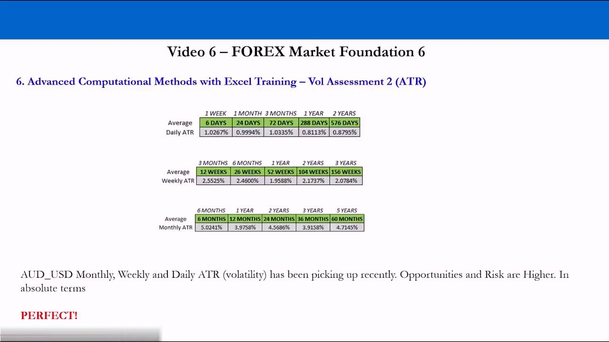
Setting up the workbook
- Open a blank workbook and create named sheets: Summary, then AUDUSD ATR Daily, AUDUSD ATR Weekly and AUDUSD ATR Monthly.
- Each tab holds one sampling frequency of price data for the same pair.
- The Summary sheet will later collect every horizon table for both pairs so you can compare them side by side.
Structure comes first. Separating daily, weekly and monthly data onto their own tabs keeps the identical ATR formulas cleanly pointed at the right sampling frequency.
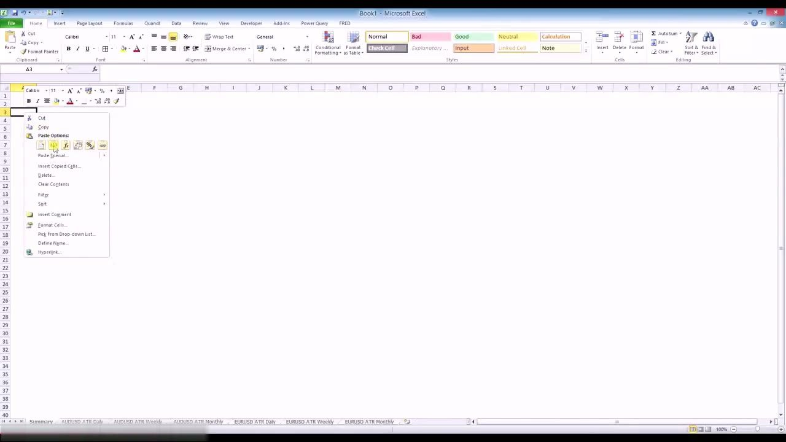
Pulling OHLC data from Investing.com
- Go to investing.com/currencies, open AUD USD, then Historical Data.
- Set the horizon 1 October 2008 to 1 March 2015 and click Apply; switch the timeframe to Daily, Weekly, then Monthly and repeat.
- Select the table from the bottom up, scroll to the top, shift + left-click before Date to grab the column titles, Ctrl+C, then Ctrl+V into cell A1 of the matching tab.
The data lands in columns A-F: Date, Last, Open, High, Low and Change %. The same select-copy-paste routine is repeated for daily, weekly and monthly frequencies over an identical date window.
The high-to-low range formula
- In column G (header 'High to low') enter =D2 (the High) minus E2 (the Low) in cell G2.
- Double-click the fill handle (the little black box bottom-right of the cell) to copy the formula down the whole data set to 1 October 2008.
- This raw range is the building block ATR then averages and normalises.
The first column is just the true range for each period: how many points the pair covered between its high and its low. Everything else is built on top of it.
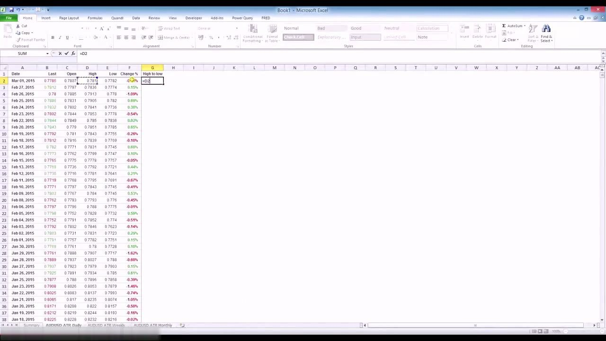
The Daily ATR formula
- In column H (header 'Daily ATR') cell H2 = (SUM(G2:G3)/2)/C3.
- It averages the last two high-to-low ranges, then divides by C3, the previous day's Open, to express the move as a percentage.
- Fill it down; delete the trailing #DIV/0! error at the bottom, which appears because the formula has no prior row to reference before 1 October 2008.
This is the core calculation: a two-period average true range, normalised by price so it reads as a percentage move. On 1 March 2015 AUD/USD it returns 0.0057715, i.e. about 0.58%.
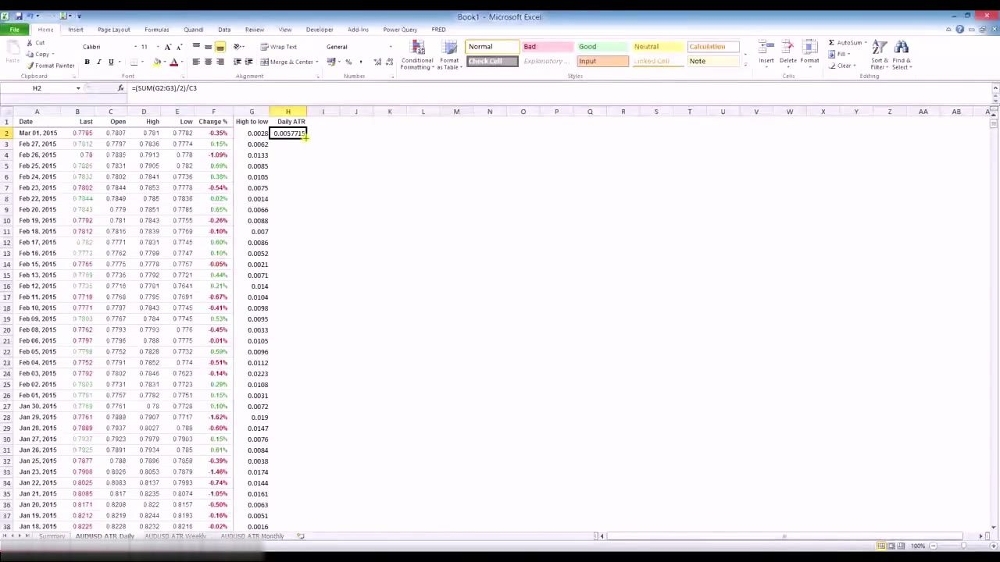
Averaging windows: ATR is horizon-dependent
- To the right of the data, average the daily ATR over 1 week, 1 month, 3 months, 1 year and 2 years.
- At 6 trading days per week for currencies, those convert to 6, 24, 72, 288 and 576 trading days.
- Cell K3 = AVERAGE(H2:H7) for one week; the others run H2:H25, H2:H73, H2:H289 and H2:H577 (days + 1 because the data starts on row 2). Format K3:O3 as a percentage.
A single ATR number is meaningless without a horizon. Averaging over several windows shows how volatility has evolved — here it is clearly picking up as you move toward the recent (March 2015) end of the data.
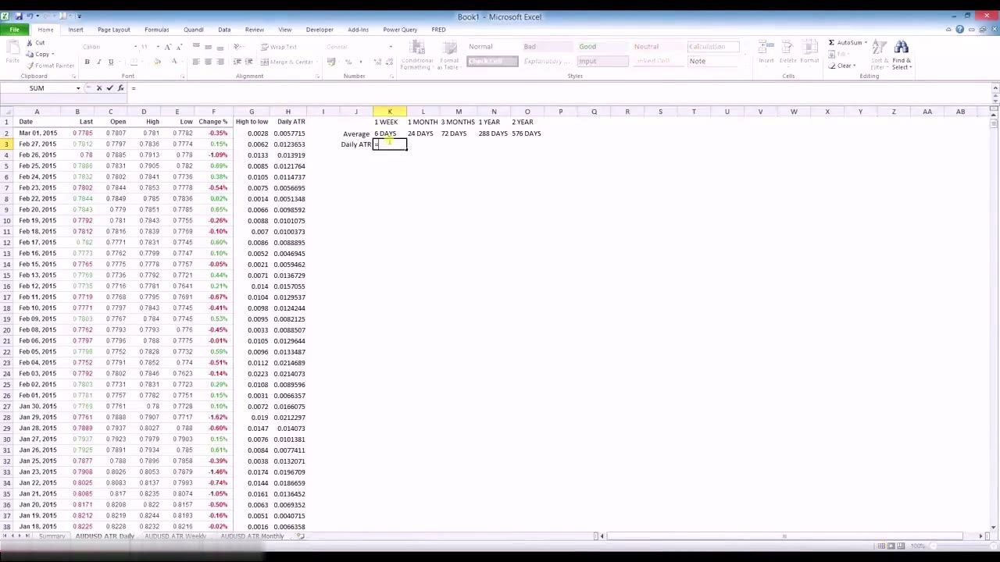
Copying the model to weekly and monthly
- Copy columns G and H into the Weekly and Monthly tabs; the formulas auto-adjust to reference each sheet's own data.
- Copy the J1:O3 horizon block across too, then re-label 'Daily ATR' to 'Weekly ATR' / 'Monthly ATR'.
- Change the windows: weekly uses 3m/6m/1y/2y/3y = 12/26/52/104/156 weeks; monthly uses 6m/1y/2y/3y/5y = 6/12/24/36/60 months, and fix each AVERAGE range (e.g. H2:H13, H2:H27) to match.
The same two formulas power all three frequencies — only the labels, the averaging windows and the row counts change. Weekly and monthly deliberately reach out to longer horizons because that is where the interesting volatility lives.
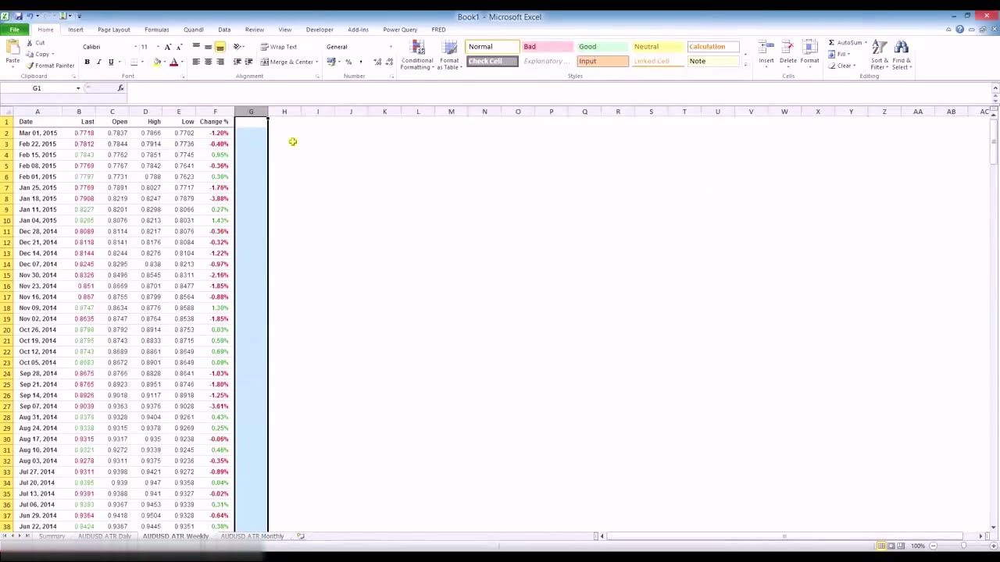
AUD/USD worked results
- Daily ATR: 1.0267% (1 week), 0.9994% (1 month), 1.0335% (3 months), 0.8113% (1 year), 0.8795% (2 years).
- Weekly ATR: 2.5525% (3 months), 2.4600% (6 months), 1.9588% (1 year), 2.1737% (2 years), 2.0784% (3 years).
- Monthly ATR: 5.0241% (6 months), 3.9758% (1 year), 4.5686% (2 years), 3.9158% (3 years), 4.7145% (5 years).
Read across the horizons and AUD/USD volatility has clearly been picking up recently on a daily, weekly and monthly basis. In absolute terms, opportunities and risk are higher — 'PERFECT!' for a trader who can capture it.
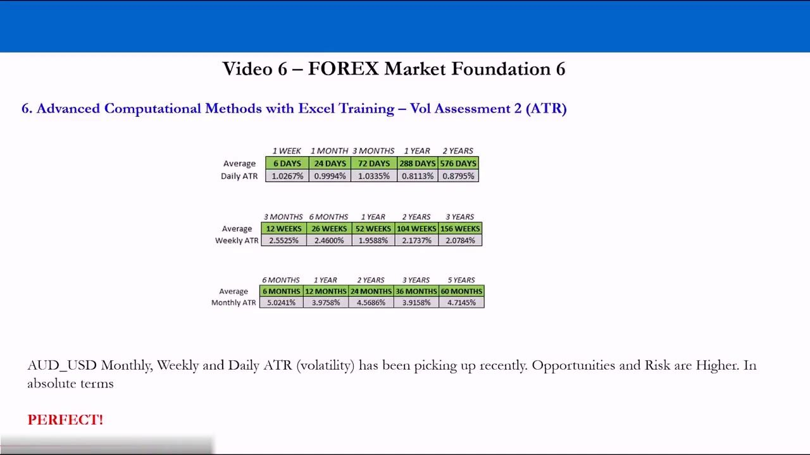
Comparing AUD/USD vs EUR/USD on the Summary sheet
- Copy each horizon table with Paste-as-Values into the Summary sheet, title the blocks 'AUDUSD ATR' and 'EURUSD ATR', format as %, add borders.
- AUD/USD is more volatile than EUR/USD across every horizon (e.g. 1-year daily 0.80% vs 0.59%; 1-year monthly 3.87% vs 3.33%), defining AUD/USD as the riskier — and higher-opportunity — pair.
- Both pairs show volatility rising in recent times, a pattern common across many currencies right now.
Putting both pairs side by side lets you rank them objectively. AUD/USD carries more range per horizon, so more opportunity and more risk than EUR/USD — a relative read that also holds on the distribution method.
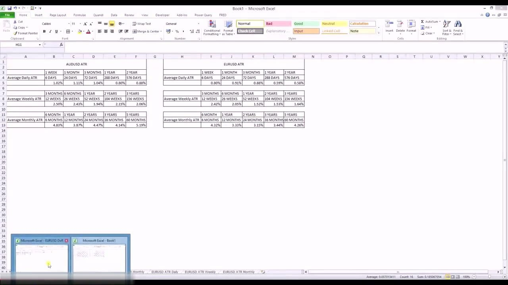
Relative ranking and commodity currencies
- Sorting the tradable USD-cross set by 1-year rolling daily ATR puts AUD/USD 5th; the top four are USD/RUB, USD/ZAR, USD/NOK and USD/SEK.
- Four of the top five are classic commodity currencies — their exports concentrate on one or two commodities, unlike the diversified EUR and GBP export markets.
- One-year rolling averages: daily 0.811%, weekly 1.959% (AUD 5th), monthly 3.976% (AUD 6th) — the numbers grow more compelling as the horizon extends.
AUD/USD sits mid-pack on weekly and monthly volatility, which makes it a good anchor to the average opportunity across the whole forex complex — and a great teaching example because the USD side forces you to learn US macro that transfers to any country.
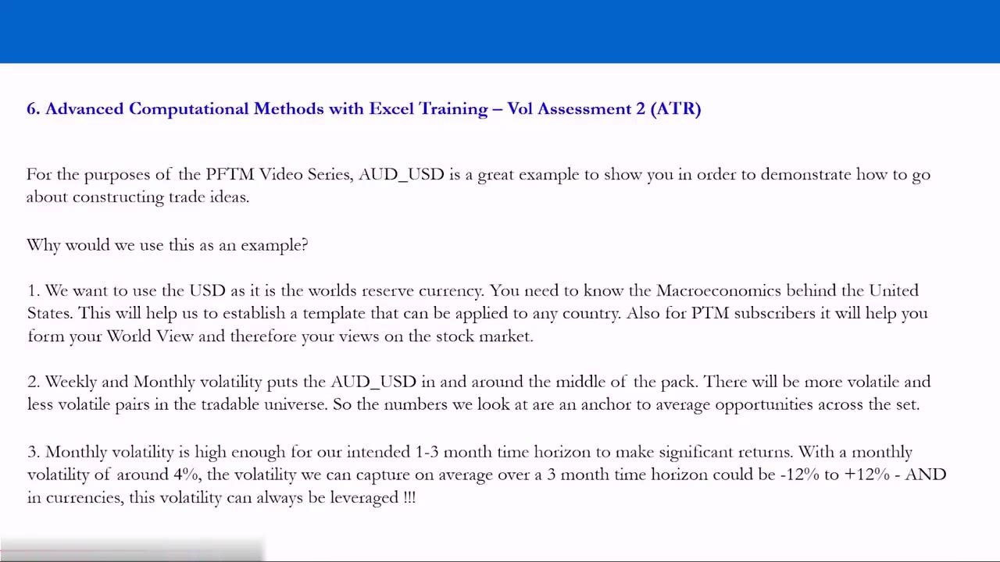
Expected range: scaling ATR to your horizon
- Daily volatility is extremely low and unpredictable in absolute terms for any forex pair; the edge appears on weekly and monthly time frames.
- With AUD/USD monthly volatility around 4%, a 3-month horizon implies capturing roughly -12% to +12% of range.
- Over 6 months that scales to about -24% to +24% if the pair trends in one fundamental direction — the professional 1-to-3-month-and-longer approach.
This is the payoff of the whole exercise: turn a per-period ATR into an expected range over your holding period. Combined with fundamentals to predict the trend, the longer horizon is where consistent, leverageable returns live.
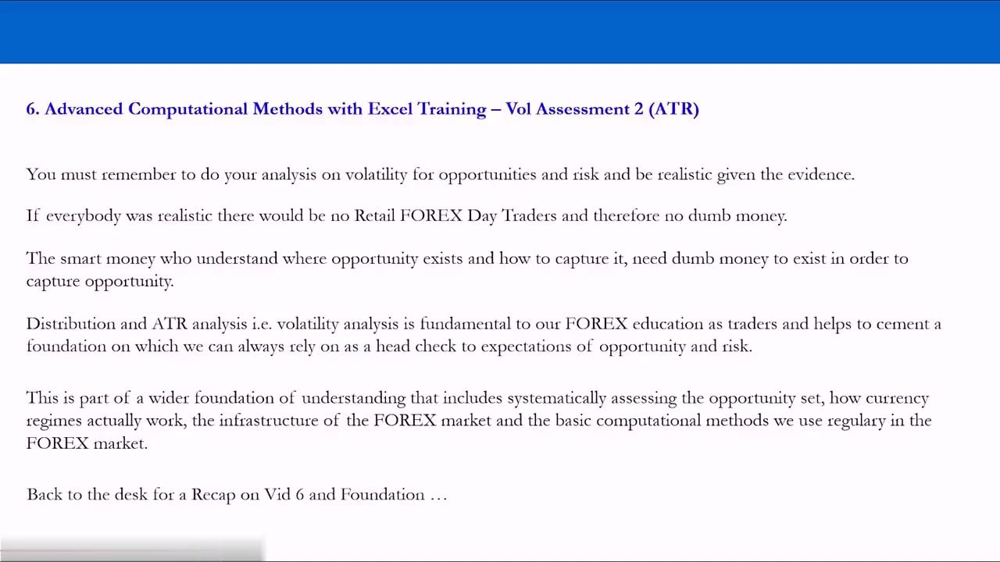
Turning range into return with leverage
- Set your own gross exposure by depositing more and choosing your leverage — e.g. a $25,000 margin deposit run at 8x for $200,000 exposure.
- A 12% move on $200,000 is a $24,000 gain, i.e. about a 96% return on the $25,000 deposited — from one position taken and left alone.
- You do not need to trade every day: establish the fundamental trend, put the position on, and let it capture the volatility over months.
In currencies the captured range can always be leveraged. Choosing your own exposure lets you sit through the noise and harvest a longer-horizon trend rather than churning trades daily for nothing.
Why this matters: smart money needs dumb money
- Do the volatility analysis for opportunity and risk every time, and be realistic given the evidence.
- If everyone were realistic there would be no retail forex day traders and therefore no dumb money; smart money (professionals, hedge funds) needs dumb money to exist to capture the opportunity.
- Distribution + ATR analysis is a foundational head-check on your own expectations, letting you cut the noise and verify opportunity/risk objectively at any time.
ATR is part of the wider foundation — the opportunity set, currency regimes, market infrastructure and the everyday computational methods. With it grounded, the course moves on to macro fundamentals and idea generation.
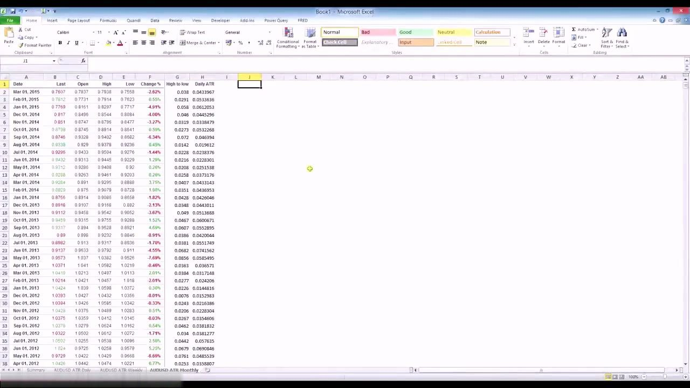
Glossary
- ATR (Average True Range)The average of a period's High minus Low, here expressed as a percentage of the opening price — a measure of how far a pair typically travels.
- High-to-low rangeHigh minus Low for a single period (column G, =D2-E2); the raw building block that ATR averages and normalises.
- Daily ATR formula=(SUM(G2:G3)/2)/C3 — the mean of the last two high-to-low ranges divided by the prior period's Open, giving a percentage.
- Averaging windowThe look-back over which ATR is averaged. Currencies use 6 trading days per week, so 1w/1m/3m/1y/2y become 6/24/72/288/576 days.
- Expected rangeATR scaled to a holding period — e.g. ~4% monthly volatility implies roughly -12% to +12% over 3 months.
- Commodity currencyA currency whose exports depend heavily on one or two commodities (AUD, RUB, ZAR, NOK), giving it structurally higher volatility.
- Gross exposureTotal position size relative to margin deposited; setting it deliberately (e.g. $200,000 on a $25,000 deposit) is how you choose your own leverage.
- Smart money / dumb moneyProfessionals and funds who understand where opportunity lies (smart money) rely on unrealistic retail day traders (dumb money) to capture it.